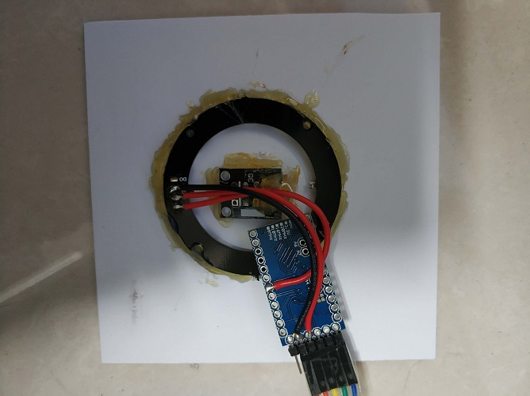
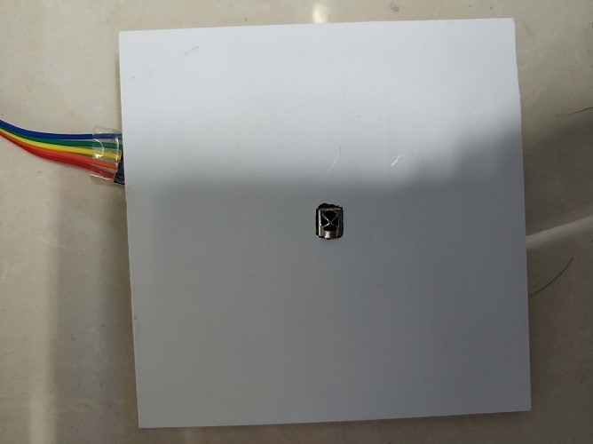

几个月前就想过做个可以用红外遥控器控制WS2812灯条/环显示不同内容的小东西，需要的模块已经买了，一个红外遥控套件，arduino pro mini、一个有12个WS2812灯珠的圆环，最近几天终于把这个给做了。
硬件非常简单，只需用到Arduino 2个IO口：
| IO 11 |
| <------ | IR RECEIVE
arduino | IO 3 |
| ------> | WS2812 DATA
可惜，组装前忘了拍照了，只有组装后的样子，就是太难看了，审美还是硬伤，因为这LED灯太亮了，肯定对眼睛不好，就把WS2812B灯环贴在了块白色PVC板（应该是跟PVC水管相同的材料）上，效果还是挺不错的，

背面，直接用热熔胶固定，就是太难看了，3个模块分别是：环形的WS2812B模块、蓝色的Arduino pro min、黑色小板是红外接收部分，

正面，PVC板中间的是红外接收头：1838